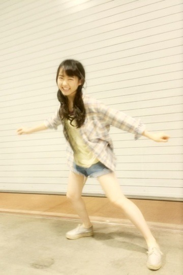
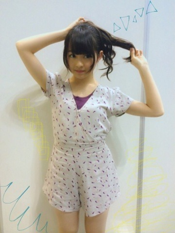
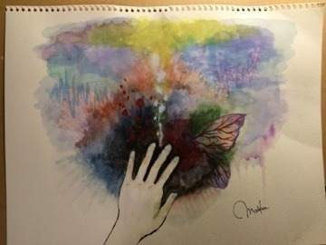
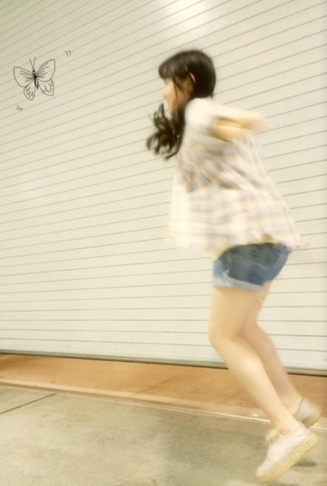
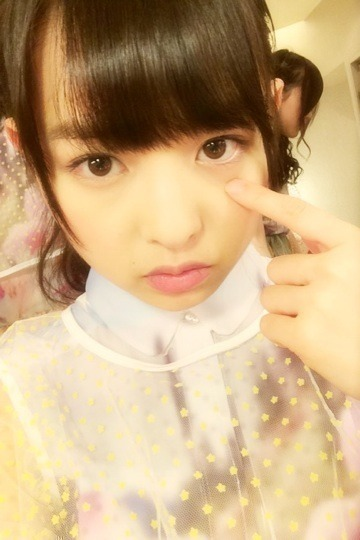
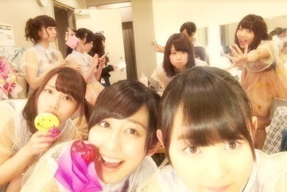
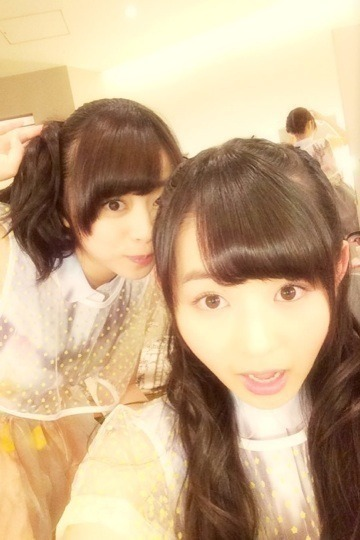
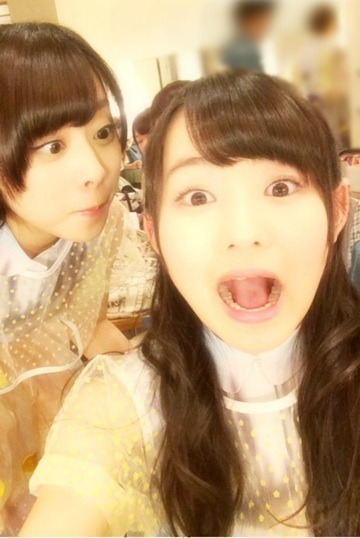
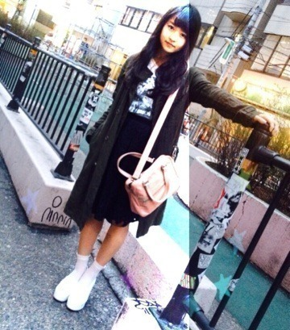

2014/0507Wed引きこもり女。569回目
パシフィコ横浜で個別握手会！
アンダーライブの感想
たくさんありがとうございました！
もっともっと頑張ろうって思えた。
私服
2部 ゆる巻ツイン
3部 ちょんまげみたいなやつ

チェックシャツ
used(Inpaichthys kerri)
Tシャツ RNA-N
デニムショーパン used
靴 GAIMO
田舎、
虫取り網を持って走りたい
4部 うしろでくるんとまとめたお団子
5部 ゆる巻ポニー

オールインワン ZURI
こういうオールインワンとか
つなぎがだいすきなの〜
握手会で何度も
この柄乃木坂じゃん
ってつっこまれて
...あ！
たしかに...(遅)
でも意識したわけじゃなくて(恥)
そうなの、そんなつもりじゃ(恥)
を繰り返したな。
もともと紫色は好きだから...
かわいいからいーのよ
絵のリクエストが多く、
とても嬉しい。
表紙を担当させていただいた
熊坂監督の小説が
中盤に入りました。
ぜひ読んでください！
今更ながらですが、
リクエストがあった
表紙の原画を載せる！

今描いてる絵、
完成したら載せるね
9thシングルの発売日
握手会で発表されたね！
7月9日！夏！
ああ、もう夏か〜
ガルルが懐かしいなあ

僕も飛ぶんだ...！
まりか
2014/0505Monジャムは無意識。568 回目
最近、、、

下まつげが欲しい！！！！
って思うの。
ぶぁさってなりたい、
目の周りにぶぁさ！みたいな、
ね、うん、
誰か下まつげください。
......
アンダースペシャルライブ！
が無事終了しました！
12時、15時、18時の3公演。

全握券3枚が応募券だったため
来てくださるかどうか
不安でいっぱいでしたが、
もう一度呼びかけして完売。
本当にありがとうございました。
セットリスト
制服のマネキン
狼に口笛を
会いたかったかもしれない
-MC1-
ガールズルール
君の名は希望
生まれたままで
-MC2-
ユニット2曲
初恋の人を今でも(1部3部)
涙がまだ悲しみだった頃(2部)
おいでシャンプー
アンコール
気づいたら片想い
13日の金曜日
13日の金曜日が最後って
アンダーらしい
日に日に落ちサビを
歌ってくれる方が増えてきてる。
なんか合唱団みたいで楽しい♪
一緒に歌うっていいね。
MC2の部分は
3グループにわかれて
それぞれMCを担当しました〜
いつものライブだと緊張して
うまくしゃべることができないのに
まったく緊張しなかったよ〜
MCで緊張しなかったの初めてだ笑
みなさんノリ良すぎだし、
とても安心してましたっ
私は3部でユニット曲に参加。
私のために誰かのために
歌へたvs歌うま
私はもちろん歌へた組
あまりにも緊張しすぎて
顔がにやけたり固まったりと
落ち着いてないのがみなさんにバレて
「まりかがんばれー」
という声援をたくさんもらった笑
うん、落ち着きました...泣
歌上手くなりたいなあ
3部のアンコールが終わった後
またアンコールの声が...
まさかのWアンコール。
泣きそうになりながらも
おいでシャンプーを
もう一度歌いました。
終了してからも拍手、声援
袖で聞いていました。
幸せです。
メンバーも観に来てくれました。
嬉し恥ずかしな気持ち！
来てくれてありがとう〜


奥歯見えちゃうくらい
楽しんでもらえたかな。
17日の名古屋アンダーライブも
頑張ります！！！
今日は横浜個別握手会！
楽しみ〜♪
まりか
2014/0503Satまだ残ってる。567回目
風が気持ちの良い季節に
なってきました。
こんなニット暑苦しい。
いつかの私服

これもちょっと暑苦しい？
あれ？これ、載せたっけ、あれ
この前、
お父さんが炊き込みご飯を
作ってくれました...
おじいちゃんが採ってきた筍！
家の竹やぶにはえてたんだって！
おじいちゃんはいつも新鮮な野菜を
お家に届けてくれます。
野菜美味しいの。
伊藤家は普段、炊き込みご飯を
作らないので感動しちゃった〜
こないだもおにぎりにして
撮影場に持って行きました
また作ってほしい
って頼んだら今から作るって笑
やったー♪
......
月刊エンタメ載ってます！
堀未央奈×伊藤万理華
ペアグラビア
見たらなるほど、ってなるかなあ
しっくりきてるかしら！
楽しんでました
取材でもあるように
撮影中ずっとボケてました。
毎回そうです、
もちろん一人か二人くらい
じゃないとできないけど。
そうしてないと落ち着かないみたい。
笑わせるの好きなのかな、、？
載せられる写真って
全部綺麗に撮ってもらったもの
ばかりだから載せられないのが残念。
あ、バレッタのナタリーグラビアでは
ふざけてるところも載ってる！
本当にいつもあんな感じよ。
でも綺麗に撮ってもらえるって幸せ。
やっぱり撮影は楽しい！
こんなにヒール高かったの。
ガニ股で歩いてたら
スタッフさんに笑われた笑
5月9日はBOMB発売！
日芽香と飛鳥と私の3人です。
こちらもよろしくお願いします！
その前にアンダーライブ...
明日、、
ドキドキが止まらねえ！！！！
おれ、がんばる！！！
まりか